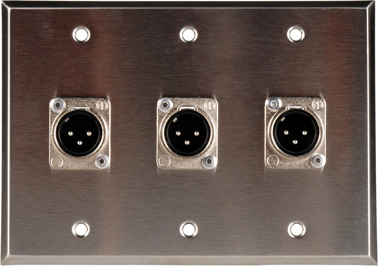
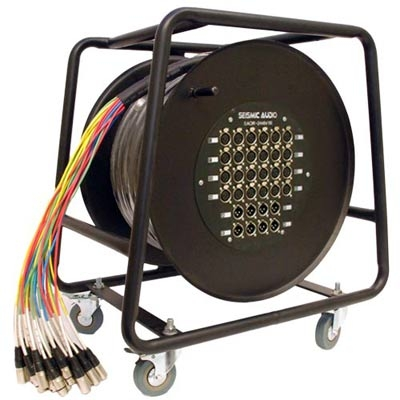

You need to demonstrate how you connected your equipment up to the mixer. You may have used a Wall Patchbay or connected your equipment straight into the mixer.

A patchbay is an extension of the physical inputs of a console or soundcard. It can be connected to a wall or floor in an adjacent room to extend the sockets on the mixer. Different wall boxes have different configurations, some can be customised completely during installation. These wall boxes are usually connected by long looms which connect to the back of the mixing desks or sound card.

Cable drums are very common in live situations as they allow long lengths of multicore cabling to be wound in a small format drum. On the side of the drum there are connectors that work in a very similar way to wall box. This mobile approach is great for transportation and situations where you do not know the length of the stage area.